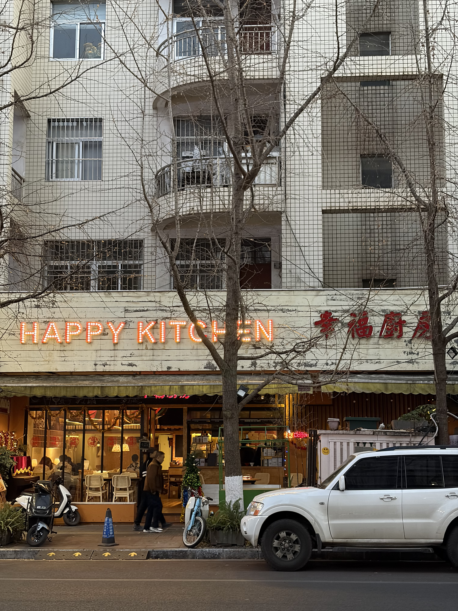
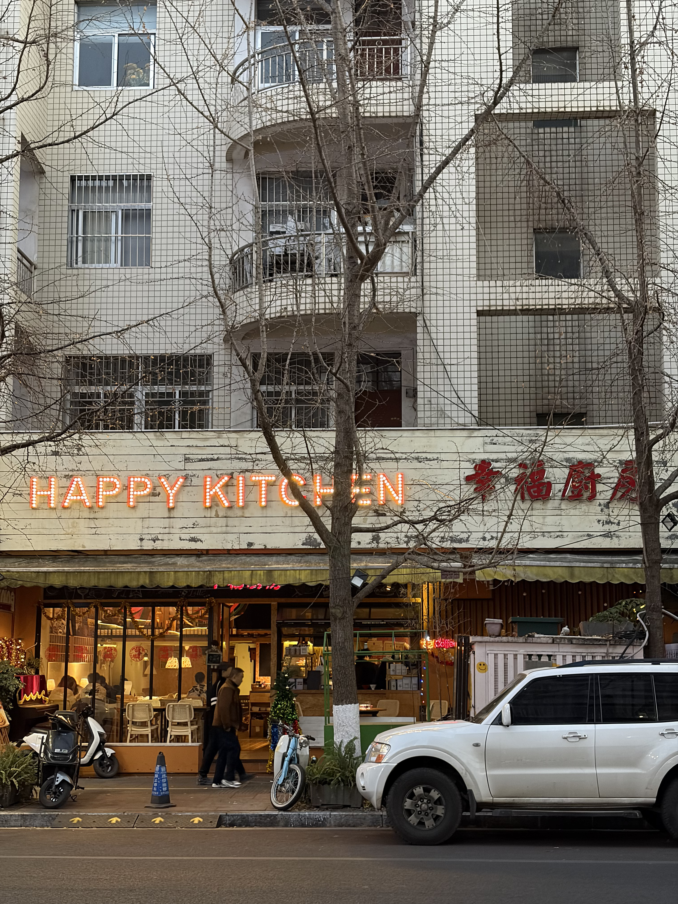

10月还是11月的某一个时刻，能能说想去清迈玩。
12月的某一个时刻，我们打开携程的机票页面，搜索武汉至清迈的机票。
1月，清迈我们来了！
1.11 昆明半日
早上11点飞机，下午先到昆明。小时候来过昆明，24年也路过一次，不过这是第一次和朋友来昆明。
下午放完行李，我们坐了一个小时的地铁到翠湖。冬天的昆明天气很好，阳光不刺眼。翠湖像是个人民公园。最近有个电影也叫《翠湖》，在翠湖边还能看到它的宣传版版。
我在这个湖边拍了一两张胶片，事实证明，这是这个旅途中第一次也是唯一一次用胶片拍。此卷从去年5月在日本被装上后还未拍完，太残忍了……
有许多人，有许多鸭子。🦆


从翠湖出来之后本想直接去逛逛书店，但是路边传来一阵煮pho的汤香，于是立刻决定去吃pho。事实证明这家pho真的很好吃……🍜
惯食Pho bo Viet Nam，亚米亚米。
接下来就是书店时间，我们去了几家书店。
第一家叫做纸布石书店。（ZBOOKS）
很有意思的书店，一楼有许多小人书（小小的一本，很适合随身携带的书，我把它们统称为小人书），楼上有许多很有小巧思的角落。选书的品味也很好，而且还有一些小孩看的绘本。也有一些文创。
在这儿买了一本陀的地下室手记小人书，本打算在飞机上看，但结果一上飞机就睡觉了，回到学校也没看完……


昆明蓝天真美。而且由于地方偏西偏南，在昆明要7点左右天黑。
我们偷了黄昏一个半小时的时间。
第二家书店是橡皮书店。
依旧是有意思的小书店，记得一楼到二楼的梯子特别旋。有一些古着。还看到了塞尔达的图鉴，和能能在一旁细细品鉴了10分钟。听说这儿以前还是个青旅，如果真的可以住进书店里，那很神奇。


第三家书店叫做卡夫卡书屋。我以后开书店叫做陀陀书屋。卡夫卡的东西没看到特别多（因为我没看过……），倒是记住了这儿的厕所。艺术家就是要连厕所都装修一下吗。

抛下书本上街去！

 

在等晚上吃饭排队的时候，去了第四家书店，大象书店。这个书店有许多美丽的木头家具，有很多关于云南的书籍。（忘记拍照了……）
逛昆明的书店很幸福，因为每一家都不一样。
晚饭吃了大概是昆明菜。这儿的土豆叫洋芋，我最喜欢的是洋芋泥，忘记菜名是什么了，就是很美味的一盘土豆泥。还有一个牛奶豆腐汤，第一碗喝完觉得好甜！怎么会有这个味道的汤？结果越喝越好喝，嗯嗯。炒鸡丁倒是给我一种像外国人做的辣子鸡丁的感觉，因为之前在新西兰吃的中餐馆里的辣子鸡就是这样的鸡米花TT。
吗哪，还不错哉，怀念土豆泥。
然后我们就回酒店了。
1.12 清迈
8点的飞机，到清迈是清迈时间的早上9点多。直奔美丽的民宿放行李。
第一天我们走了特别多的路。
早上起的太早，先去附近的咖啡店喝了个咖啡。是一个环境很好的咖啡店来着。
但我忘了名字。易碎记忆初见端倪。
休息了一会儿我们打算去宁曼路买人字拖。路过了彩色的房子。彩色的公寓，看上去会很生动。
接下来是第一次被711打劫，第一次是两瓶饮料。接下来的每天我们都会被711打劫不止一次。
橙色的是泰奶，很甜，但是我爱喝甜的就觉得很好喝。绿色的是能能喝的，好像是茶的味道，不知道，反正味道很曼妙。
街边的一个柱子贴的，何意味？

午餐时间到！第一顿吃的像是一家大排档，点了打抛饭两个和一个空心菜，心心念念的空心菜。不过这个空心菜看起来份量小小的。之后发现这儿的菜量都是小小的，大概是一个人的份量。
很赞，流心的蛋，拌饭一起特别好吃。

清迈的冬季午后阳光还是有点热，吃完饭之后我们从宁曼走到了清迈大学。这样对别人的大学生活进行观察，这儿跑步的人特别多，无论是下午还是晚上。
很美丽的树，阳光的形状也很美。


石头也是小象的样子。🐘

路牌上挂了小香蕉和花，不知道是什么意思。


中间这个湖叫做静心湖。日落的时候我们在湖边坐了一会儿。
寻猫启事：助力小猫回家…
本想去看看有没有纪念品商店，但实在有点走不动，所以到夜市去寻寻觅觅。在众多小摊中选择了烤蘑菇和咖喱饭。做咖喱饭的似乎是日本人。在吃饭的时候有人在吹萨克斯，一次神奇的爵士夜市体验，在夜市边吃饭边听《Close to you》的体验确实十分不常见！
还有《From the Start》……还有许多……易碎记忆持续发力中……
饭后我们还去逛了一下夜市旁边，有一些卖中古手办玩偶的店，见到很多熟人。然后我们就回民宿了。
放几张民宿的照片吧！专享客厅还是很赞的。
就是第一晚还没摸透这个东南亚的即热热水器，被迫洗了个冷水澡，15度天洗冷水澡没生病，事实证明身体素质过硬……
By the way，这个床垫真的超级舒服，差点比家里的还舒服。睡了个好觉！
第一篇就写到这儿吧，图片太多了，因为都想记录一下。